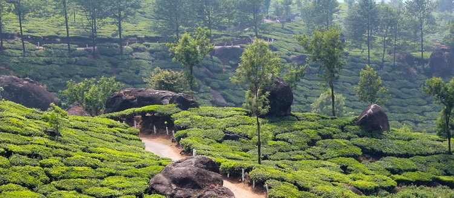
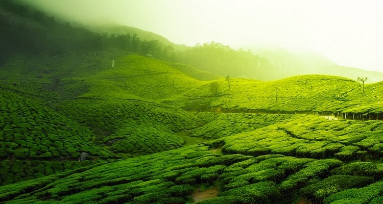

История возникновения чая
Легенда гласит, что китайский император Шен Нунг (2737 год до н. э.), случайно обнаружил чай, когда листок чайного дерева упал в его миску с горячей водой, пока он был в саду. Его сразу заинтересовал запах полученного варева и он решил его попробовать. Отвар ему так понравился, что чуть позже он напишет, будто почувствовал как напиток проник во все частички его тела.
Намного позже император династии Тан (618-907 н.э.) Лу Юй, напишет трактат о чае под названием «Ch’a Чинг». В котором расскажет о происхождении, способах заваривания, и о целебных свойствах чая.
В 200-м году до н.э. императором династии Хань был издан указ, что при обращении к чаю должен использоваться специальный письменный символ, иллюстрирующий деревянные ветки, траву и человека между ними. Данный иероглиф стал символом равновесия между человеком и природой.
Опровержение легенды: В 1987 году археологи неожиданно обнаружили чайные реликвии в горах Тяньлуо, которым, по оценкам около 7000 лет. 26 лет спустя была сделана ещё одна многообещающая находка: в тех же горах археологи обнаружили окаменелые корни растения Камелия Синенсис и кусочки сломанной керамики. После долгих исследований в 2015 году было опубликовано заключение, в котором говорилось, что найденным в пещере корням 6000 лет, а это значит, что чай впервые использовали во времена культуры Хемуду, процветающей в 4500 году до н.э то есть за 4000 лет до того, как была построена первая пирамида. И что, как вы понимаете противоречит легенде.
История чая в Японии
В 804 году японские монахи по имении Саичо и Кукая были первыми кто привёз чай в Японию, а вместе с ним ритуал чаепития и способ обработки чайных листьев. Первый кому был подан чай стал император Сага, правивший Японией с 809 по 823 год.
Не смотря на то, что в Китае чай стал обычным делом в Японии он долгое время был доступен только священникам и дворянам в качестве лекарственного напитка. И только в период Муромати (1333-1573) чай завоевал популярность среди людей всех социальных классов. Члены семей собирались на вечеринки и играли в игру в которой участники сделав пару глотков чая должны были угадать его название и откуда он к ним приехал.
История чая в России
Первым упоминаем о чае в Россия принято считать 1638 год, именно тогда один из российских послов вернувшись от западномонгольского Алтын-хана, привез чай в качестве подарка в Москву. Царь Михаил Федорович Романов не долго думая приказал боярам испробовать неведомую траву. Спустя какое-то время те вернулись и доложили, что как только они её не готовили на вкус она всегда была отвратительна.
Первое время царь даже хотел обидеться, но вовремя одумался и велел узнать у посла, как правильно его готовить, тот рассказал, что его необходимо заваривать, а не жевать. Только после этого, удалось распробовали и по достоинству оценить уникальные свойства данного напитка. Точно так же как и в остальных странах, чай долгое время был дорогим удовольствием и пить его могли только дворяне и члены царской семьи. Помимо придворного назначения чай также известен тем, что его использовали в медицинских целях.
Общенародную популярность чай приобрёл на стыке 19 и 20 веков, постепенно дешевея и становясь доступным для всех слоёв населения. В больших городах начинают появляться чайные палатки, а в домах формироваться «чайный этикет». Все чаще можно было услышать от своего соседа приглашение на чай

История чая в Европе
Начиная с 10 -века чай стал главным экспортируемым товаром Китая, первое время в страны Азии, а с 17-го века и в Европу.
в 1606 году в порт Амстердам (Голландия) прибыли первые ящики с чаем. В то время East Indies — голландская компания имела весьма тесные связи с Дальним Востоком благодаря чему им принадлежала монополия на торговлю чаем в Европе вплоть до 1660 года.
В 1635 году врачи Германии проанализировали свойства чая и пришли к выводу, что его потребление может стать опасным для здоровья. Несмотря на это уже через два года, чай успешно зарекомендовал себя в кругах аристократов. Чаепитие стало социальным явлением для женщин из разных классов. Правда их мужья увидели в этом угрозу для благосостояния семьи и даже попытались запретить продажу чая. Однако это совпало с исследованиями проведёнными английскими и голландскими учеными, по мнению которых чай весьма и весьма полезен, плюс ко всему было замечено снижение уровня потребления алкоголя, что как вы понимаете не могло не сыграть своей роли.
В 1657 году Томас Гарравей, владелец одной из кофейнь в Лондоне, стал подавать чай в своем заведении и даже разместил рекламу в местной газете.
История чая в Индии
Индия является вторым по величине производителем чая в мире с более чем 900 000 тонн в год. Первоначально чай был ввезён в Индию британцами в девятнадцатом веке, чтобы преодолеть монополию китайского производства. Первый район в котором началось производство чая стал горный район окружающий город Дарджилинг, расположенный в предгорьях Гималаев. После чего началось развитие равнин Ассама.
В конце 18 века Индия построила свой первый завод, жители из отдалённый районов приходили на работу, где и начали экспериментировать с растущим в Индии чаем. Промышленное производство в Индии развивалась очень медленно в виду того, что технологии заложенный в Китае были хороши для холодного климата и губительны для растении выращенных в низинах.
Британцы не спешили признавать местные растения и их промысловое значение. Тем не менее когда в 1833 году договор о поставках из Китая был расторгнут, предприниматели родом из Великобритании стали приверженцами чая с земель Индии, тем самым признав качество и коммерческое составляющее чая Ассам (штат на востоке Индии) и направили туда своих инвесторов, чтобы начать разработку чайных плантаций.

Были вырублены сотни гектаров лесов, выращивание стало развиваться не мысленными темпами привлекая всё больше и больше инвесторов с соседнего Непала. Но погода и болезни, такие как малярия, так же делали своё дело, десятки рабочих из Китая ежедневно заболевали и депортировались из страны, что приводило к тому, что люди из ближайших районов Индии были вынуждены работать за копейки на плантациях. Условия труда были невыносимы и бесчеловечны. Болезнь распространялась. Любой кто покинет рабочее месте, мог быть отправлен в тюрьму и приговорён к наказанию в виде «порки». Работники недоедали и жили в болотистой местности, где свирепствовали маскиты. Около трети работников умерли прям на плантации.
В 1869 году, был открыт Суэцкий канал, что привело к увеличению экспорта чая, это способствовало развитию производства в других районах Индии. В предгорьях Гималаев в городе Дарджилинг (англ. Darjeeling) стал производиться лучший и один из самых дорогих видов чая. Индия в скором времени стала крупнейшим экспортером. Потребление чая местными жителями также значительно возросло. Лучшие чаи выращивают на высоте от 5000 до 6000 футов в Дарджилинг на севере и в горах Нилгири в южной Индии.
Цейлон (Шри-Ланка ), остров к югу от Индии, имеет отличные условия для роста чая. В настоящее время второй по величине экспортером чая в мире. Чай был завезён на Цейлон гораздо раньше кофе, но всё равно оставался номер 2, а во время кофейного упадка в 1869 году, который полностью разрушил кофе экономику, всё производство было перестроено под чай. В очень короткие сроки производство чая взяло верх над другими культурами и в настоящее время составляет одну треть от общего объема экспорта страны.